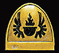

Imperial Forces |
Force Disposition Introduction |
Ork Forces |
|
The origins of the Angels of Vigilance are shrouded in mystery. It is suspected that the Chapter came into existence during the Second Founding, but it is unknown from which Legion their gene-seed originates. Given the monastic nature and unflinching devotion to duty of the Space Marines within the Chapter's ranks, it is believed that they may be one of the Dark Angel's successor Chapters. However this is unconfirmed and certainly the Chapter is not listed in the Apocrypha of Davio as such.
The fortress monastery of the Angels of Vigilance is a gigantic orbital dock circling the world of Pervigilium. These docks are situated just outside the Cadian Gate, the stable corridor of space that leads from the Eye of Terror to Earth. Each time the fleets of Chaos vomit from the Eye of Terror, the Angels of Vigilance muster to fight them. Each time warp space is calm enough to allow passage, the Angels of Vigilance take the fight to the forces of Chaos.
|
| ||||||||||||||||||||||||||||||||||||||||||||||||||||||||
|
 However unlike many other Chapters of Space Marines, the Angels of Vigilance have never once mobilised their entire Chapter to fight in warzones across the galaxy. Each battle brother has sworn a blood oath that the monastery shall never be undefended and each time the Chapter has been called to war, at least one company is duty bound to remain on the monastery. Several times in the Chapter's history the Masters of the order have had their loyalty questioned when they have ignored the High Lords of Terra's requests for the Chapter's aid. The source of this blood oath is unrecorded, but Imperial histories show that in the years following the Horus Heresy, the Dark Angels Legion of Space Marines disobeyed direct orders from the High Lords of Terra and launched a campaign against the ruling castes of Pervigilium. Years later, following the Second Founding, the Angels of Vigilance took up station around the planet and have kept watch on it and the Eye of Terror ever since. | |||||||||||||||||||||||||||||||||||||||||||||||||||||||||